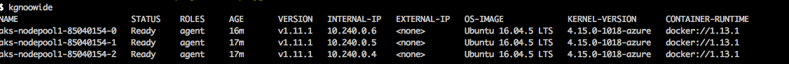
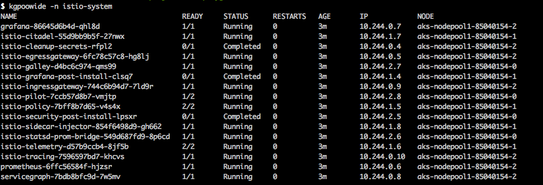
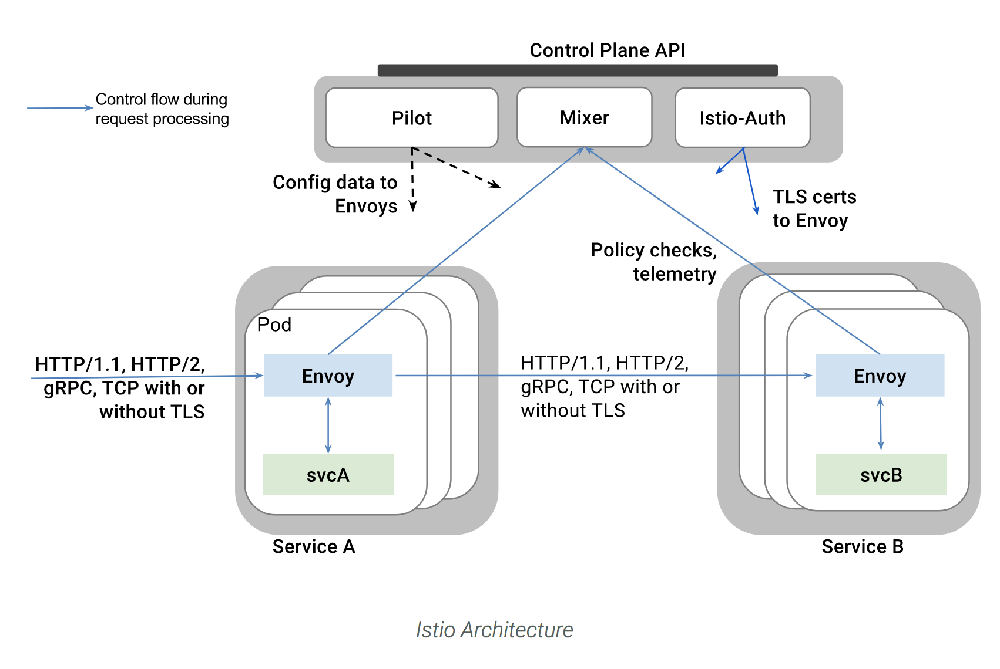
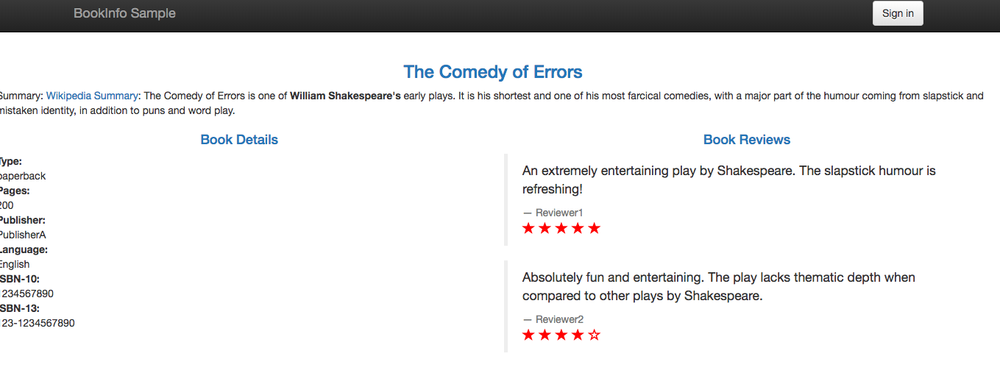
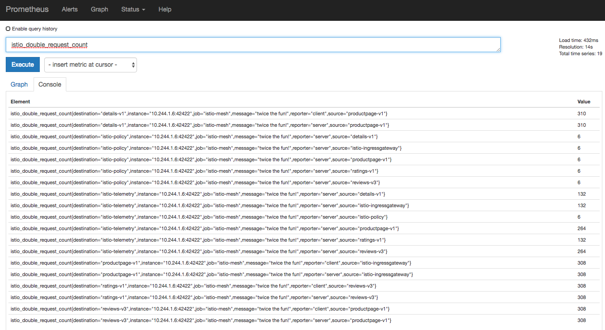
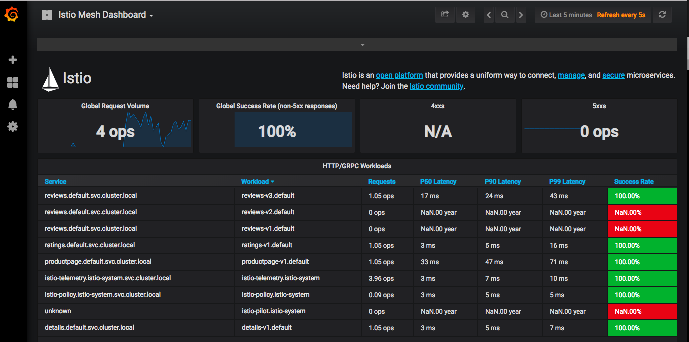
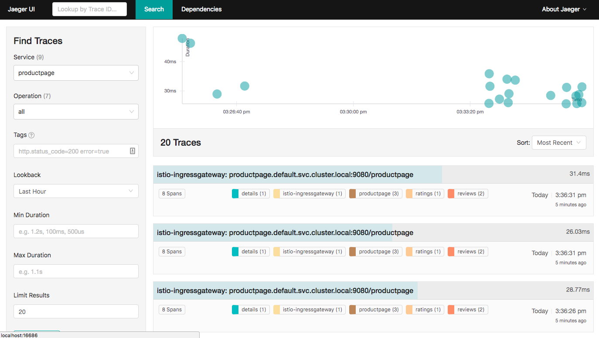
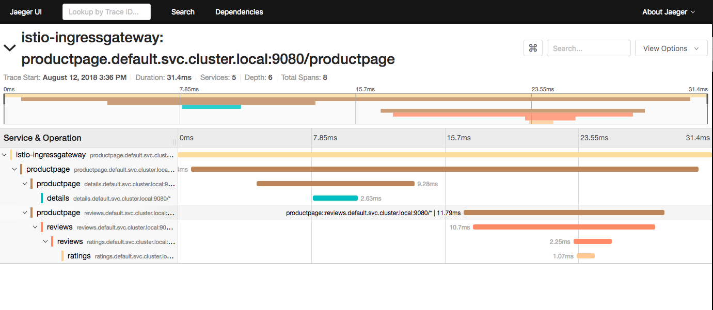

Istio recently announced that they are production ready. Service meshes are becoming an important level of abstraction for a developer using kubernetes. And Envoy is the heartbeat of this service mesh and continues its impressive growth.
Istio reduces complexity of managing microservice deployments by providing a uniform way to secure, connect, and monitor microservices.
Google have also released a managed istio service
I have previously designed and built cloud native architectures (especially on AWS). But I found that AWS have dropped the ball in relation to kubernetes. Azure and Google managed kuberentes services are more mature and Azure kubernetes offering is even free!
TLDR: I particulary like Azure AKS and below I will showcase how easy it is to create a cluster and run istio.
Brendan Burns (co-founder of kubernetes and leading the azure container team) and Microsoft have invested wisely I feel in the cloud and are kicking goals. Read the latest blog from Brendan on the most recent releases and updates.
Launch kubernetes cluster on azure (AKS)
Below these commands assume you have azure cli installed. If not check out azure cli setup
Like previous posts, I also use bash aliases for kubectl. Github project exists here
Find the location you want to create the cluster and what version of kubernetes to run. Then create the cluster with three worker nodes.
az provider list --query "[?namespace=='Microsoft.ContainerService'].resourceTypes[] | [?resourceType=='managedClusters'].locations[]" -o tsv
az aks get-versions --location "Australia East" --query "orchestrators[].orchestratorVersion"
az group create --name myResourceGroup1 --location "Australia East"
az aks create --resource-group myResourceGroup1 --name myAKSCluster --node-count 3 --kubernetes-version 1.11.1 --generate-ssh-keys
It takes a few minutes to spin up the cluster. Once its up, download the kubeconfig to use kubectl locally
az aks get-credentials --resource-group myResourceGroup1 --name myAKSCluster
Verify the nodes are running kgnoowide

Deploy istio
Istio is installed in two parts. The first part involves the CLI tooling that will be used to deploy and manage Istio backed services. The second part configures the Kubernetes cluster to support Istio.
curl -L https://git.io/getLatestIstio | sh -
cd istio-1.0.0
export PATH=$PWD/bin:$PATH
Configure Istio CRDs
kubectl apply -f install/kubernetes/helm/istio/templates/crds.yaml
Install Istio with default mutual TLS authentication
kubectl apply -f install/kubernetes/istio-demo-auth.yaml
This will deploy Pilot, Mixer, Ingress-Controller, Egress-Controller and the Istio CA (Certificate Authority).
Check the status of the pods
kgpoowide -n istio-system

Istio architecture

The previous step deployed the Istio Pilot, Mixer, Ingress-Controller, Egress-Controller and the Istio CA (Certificate Authority).
Pilot - Responsible for configuring the Envoy and Mixer at runtime.
Envoy - Sidecar proxies per microservice to handle ingress/egress traffic between services in the cluster and from a service to external services. The proxies form a secure microservice mesh providing a rich set of functions like discovery, rich layer-7 routing, circuit breakers, policy enforcement and telemetry recording/reporting functions.
Mixer - Create a portability layer on top of infrastructure backends. Enforce policies such as ACLs, rate limits, quotas, authentication, request tracing and telemetry collection at an infrastructure level.
Ingress/Egress - Configure path based routing.
Istio CA - Secures service to service communication over TLS. Providing a key management system to automate key and certificate generation, distribution, rotation, and revocation
Deploy BookInfo example application
This sample deploys a simple application composed of four separate microservices which will be used to demonstrate various features of the Istio service mesh.
Enable default side-car injection
kubectl label namespace default istio-injection=enabled
Deploy the services
kubectl apply -f samples/bookinfo/platform/kube/bookinfo.yaml
Verify the pods and services are running
kubectl get svc,pod
Deploy the ingress gateway
kubectl apply -f samples/bookinfo/networking/bookinfo-gateway.yaml
Now determine the ingress ip and port
kubectl get svc istio-ingressgateway -n istio-system
Set the ingress ip and port
export INGRESS_HOST=$(kubectl -n istio-system get service istio-ingressgateway -o jsonpath='{.status.loadBalancer.ingress[0].ip}')
export INGRESS_PORT=$(kubectl -n istio-system get service istio-ingressgateway -o jsonpath='{.spec.ports[?(@.name=="http2")].port}')
export SECURE_INGRESS_PORT=$(kubectl -n istio-system get service istio-ingressgateway -o jsonpath='{.spec.ports[?(@.name=="https")].port}')
Set the gateway url
export GATEWAY_URL=$INGRESS_HOST:$INGRESS_PORT
Verify the app is up and running
curl -o /dev/null -s -w "%{http_code}\n" http://${GATEWAY_URL}/productpage
Apply default destination rules
Before you can use Istio to control the Bookinfo version routing, you need to define the available versions, called subsets, in destination rules.
kubectl apply -f samples/bookinfo/networking/destination-rule-all-mtls.yaml
Deploying a microservice-based application in an Istio service mesh allows one to externally control service monitoring and tracing, request (version) routing, resiliency testing, security and policy enforcement, etc., in a consistent way across the services, for the application as a whole.
Werner Vogels (CTO of AWS) quoted at AWS Re:Invent
"In the future, all the code you ever write will be business logic."
Service mesh goes along way in helping you succeed that statement.
Control Routing
One of the main features of Istio is its traffic management. As a Microservice architectures scale, there is a requirement for more advanced service-to-service communication control.
User Based Testing / Request Routing
One aspect of traffic management is controlling traffic routing based on the HTTP request, such as user agent strings, IP address or cookies.
The example below will send all traffic for the user "jason" to the reviews:v2, meaning they'll only see the black stars.
kubectl apply -f samples/bookinfo/networking/virtual-service-reviews-test-v2.yaml
Visit the product page and signin as a user jason (password jason)
Traffic Shaping for Canary Releases
The ability to split traffic for testing and rolling out changes is important. This allows for A/B variation testing or deploying canary releases.
The rule below ensures that 50% of the traffic goes to reviews:v1 (no stars), or reviews:v3 (red stars).
kubectl apply -f samples/bookinfo/networking/virtual-service-reviews-50-v3.yaml

New Releases
Given the above approach, if the canary release were successful then we'd want to move 100% of the traffic to reviews:v3.
kubectl apply -f samples/bookinfo/networking/virtual-service-reviews-v3.yaml
List all routes
$ istioctl get virtualservices
VIRTUAL-SERVICE NAME GATEWAYS HOSTS #HTTP #TCP NAMESPACE AGE
bookinfo bookinfo-gateway * 1 0 default 20m
reviews reviews 1 0 default 5m
Access Metrics
With Istio's insight into how applications communicate, it can generate profound insights into how applications are working and performance metrics.
Send traffic to the application
while true; do
curl -s http://$GATEWAY_URL/productpage > /dev/null
echo -n .;
sleep 0.2
done
Setup port forwarding
kubectl -n istio-system port-forward $(kubectl -n istio-system get pod -l app=prometheus -o jsonpath='{.items[0].metadata.name}') 9090:9090 &
View metrics in Prometheus UI
The provided link opens the Prometheus UI and executes a query for values of the istio_double_request_count metric.

Prometheus was recently promoted from CNCF as a graduate project, following kubernetes.
Grafana
Verify the services are up
kubectl -n istio-system get svc grafana prometheus
Open the Istio Dashboard via the Grafana UI.
In Kubernetes environments, execute the following command:
$ kubectl -n istio-system port-forward $(kubectl -n istio-system get pod -l app=grafana -o jsonpath='{.items[0].metadata.name}') 3000:3000 &
Visit http://localhost:3000/dashboard/db/istio-mesh-dashboard in your web browser.

This gives the global view of the Mesh along with services and workloads in the mesh.
For more info checkout https://istio.io/docs/tasks/telemetry/using-istio-dashboard/
Distributed Tracing
This task shows you how Istio-enabled applications can be configured to collect trace spans. After completing this task, you should understand all of the assumptions about your application and how to have it participate in tracing, regardless of what language/framework/platform you use to build your application.
Accessing the dashboard
Setup access to the Jaeger dashboard by using port-forwarding:
$ kubectl port-forward -n istio-system $(kubectl get pod -n istio-system -l app=jaeger -o jsonpath='{.items[0].metadata.name}') 16686:16686 &
Access the Jaeger dashboard by opening your browser to http://localhost:16686.
From the left-hand pane of the Jaeger dashboard, select productpage from the Service drop-down list and click Find Traces. You should see something similar to the following:

If you click on the top (most recent) trace, you should see the details corresponding to your latest refresh of the /productpage. The page should look something like this:

And there you have it. For more information on istio check out https://istio.io/
Dont forget to delete your cluster after your finished!
Stay tuned for more posts on kubernetes.